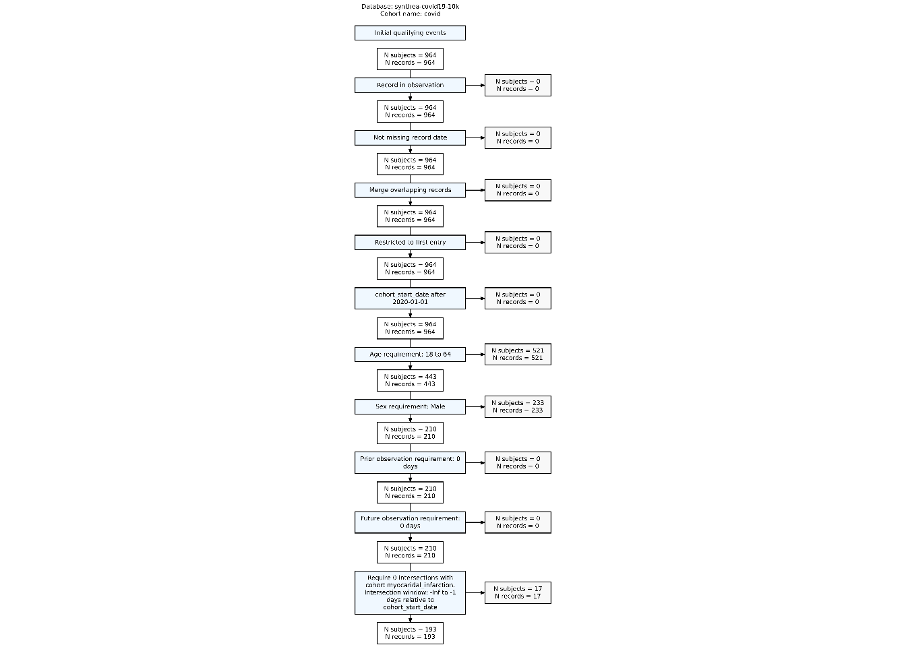

library(omock)
library(CohortConstructor)
library(CohortCharacteristics)
library(dplyr)
cdm <- mockCdmFromDataset(datasetName = "synthea-covid19-10k", source = "duckdb")8 Adding cohorts to the CDM
8.1 What is a cohort?
When conducting research using the OMOP Common Data Model (CDM), we often aim to identify groups of individuals who share specific characteristics. The inclusion criteria for these groups can range from relatively simple (e.g. people diagnosed with asthma) to highly complex (e.g. adults diagnosed with asthma who had at least one year of prior observation in the database before their diagnosis, no prior history of chronic obstructive pulmonary disease (COPD), and no history of using short-acting beta-antagonists).
The groups of individuals we identify are called cohorts. In the OMOP CDM, cohorts are represented using a specific structure: a cohort table with four required fields:
Cohort definition id a unique identifier for each cohort (multiple cohorts can be defined in the same cohort table).
Subject id a foreign key linking the subject in the cohort to the person table.
Cohort start date date indicating the beginning of the cohort record.
Cohort end date date indicating the end of the cohort record.
Individuals must be defined in the person table and must be under observation(i.e. have an ongoing record in the observation period table) to be part of a cohort. Individuals can enter a cohort multiple times, but the time periods in which they are in the cohort cannot overlap.
It is beyond the scope of this book to describe all the different ways cohorts could be created, however in this chapter we provide a summary of some of the key building blocks for cohort creation. Cohort-building pipelines can be created following these principles to create a wide range of study cohorts.
8.2 Set up
We’ll use the same Covid-19 synthetic dataset that we used before for demonstrating how cohorts can be constructed.
8.3 General concept based cohort
Often study cohorts will be based around a specific clinical event identified by some set of clinical codes. Here, for example, we use the CohortConstructor package to create a cohort of people with Covid-19. For this we are identifying any clinical records with the code 37311061.
cdm$covid <- conceptCohort(cdm = cdm,
conceptSet = list("covid" = 37311061),
name = "covid")
cdm$covid# Source: table<results.test_covid> [?? x 4]
# Database: DuckDB 1.4.1 [unknown@Linux 6.11.0-1018-azure:R 4.4.1//tmp/Rtmpq5eVcH/file3202b8a296b.duckdb]
cohort_definition_id subject_id cohort_start_date cohort_end_date
<int> <int> <date> <date>
1 1 1753 2020-09-02 2020-09-12
2 1 3444 2020-11-23 2020-11-23
3 1 215 2021-07-23 2021-08-22
4 1 894 2020-08-19 2020-09-18
5 1 1587 2020-12-13 2021-01-01
6 1 4724 2021-04-28 2021-05-15
7 1 5177 2020-11-06 2020-11-16
8 1 5416 2020-12-22 2021-01-15
9 1 5947 2021-01-11 2021-02-12
10 1 6454 2020-10-04 2020-10-25
# ℹ more rows
NoteName consistency
Note that the name argument determines the name of the permanent table written in the database and as we have seen before, we have to be consistent assigning the tables to the cdm object. That’s why we used name = "covid" and then we were able to assign it to cdm$covid. Otherwise, see this failing example:
cdm$not_covid <- conceptCohort(cdm = cdm,
conceptSet = list("covid" = 37311061),
name = "covid")Warning: ! `codelist` casted to integers.ℹ Subsetting table condition_occurrence using 1 concept with domain: condition.
ℹ Combining tables.
ℹ Creating cohort attributes.
ℹ Applying cohort requirements.
ℹ Merging overlapping records.
✔ Cohort covid created.Error in `[[<-`:
✖ You can't assign a table named covid to not_covid.
ℹ You can change the name using compute:
cdm[['not_covid']] <- yourObject |>
dplyr::compute(name = 'not_covid')
ℹ You can also change the name using the `name` argument in your function:
`name = 'not_covid'`.
TipFinding appropriate codes
In defining the cohorts above, we have needed to provide concept IDs for our outcomes of interest. But where do these come from?
We can search for codes of interest using the CodelistGenerator package. This can be done using a text search with the function getCandidateCodes(). For example, we can have found the code we used above (and many others) like so:
library(CodelistGenerator)
getCandidateCodes(cdm = cdm,
keywords = c("coronavirus", "covid"),
domains = "condition",
includeDescendants = TRUE)Limiting to domains of interest
Getting concepts to include
Adding descendants
Search completed. Finishing up.
✔ 37 candidate concepts identified
Time taken: 0 minutes and 1 seconds# A tibble: 37 × 6
concept_id found_from concept_name domain_id vocabulary_id standard_concept
<int> <chr> <chr> <chr> <chr> <chr>
1 756031 From initia… Bronchitis … Condition OMOP Extensi… S
2 703446 From initia… Moderate ri… Condition SNOMED S
3 3661748 From initia… Acute kidne… Condition SNOMED S
4 1340294 From initia… Exacerbatio… Condition OMOP Extensi… S
5 3661406 From initia… Acute respi… Condition SNOMED S
6 37016927 From initia… Pneumonia c… Condition SNOMED S
7 3656667 From initia… Cardiomyopa… Condition SNOMED S
8 3661885 From initia… Fever cause… Condition SNOMED S
9 37310286 From initia… Infection o… Condition SNOMED S
10 703447 From initia… High risk c… Condition SNOMED S
# ℹ 27 more rowsWe can also do automated searches that make use of the hierarchies in the vocabularies. Here, for example, we find the code for the drug ingredient Acetaminophen and all of its descendants.
codes <- getDrugIngredientCodes(cdm = cdm, name = "acetaminophen")
codes── 1 codelist ──────────────────────────────────────────────────────────────────
- 161_acetaminophen (25747 codes)Note that in practice clinical expertise is vital in the identification of appropriate codes so as to decide which the codes are in line with the clinical idea at hand. Additionally, not all codes may be used in the database. To check for this, we can use the function subsetToCodesInUse().
usedCodes <- subsetToCodesInUse(list("acet" = codes[[1]]),
cdm = cdm)We can see that as well as having the cohort entries above, our cohort table is associated with several attributes.
First, we can see the settings associated with cohort.
settings(cdm$covid) |>
glimpse()Rows: 1
Columns: 4
$ cohort_definition_id <int> 1
$ cohort_name <chr> "covid"
$ cdm_version <chr> "5.3"
$ vocabulary_version <chr> "v5.0 22-JUN-22"In settings, we can see the cohort name that by default is the name of the codelist used, in this case ‘covid’ as we used conceptSet = list(covid = 37311061). Also, the cdm and vocabulary versions are recorded in the settings by the CohortConstructor package.
Second, we can get counts of each cohort.
cohortCount(cdm$covid) |>
glimpse()Rows: 1
Columns: 3
$ cohort_definition_id <int> 1
$ number_records <int> 964
$ number_subjects <int> 964Where you can see the number of records and number of subjects for each cohort. In this case, there are no multiple records per subject.
Attrition can also be retrieved from any cohort.
attrition(cdm$covid) |>
glimpse()Rows: 6
Columns: 7
$ cohort_definition_id <int> 1, 1, 1, 1, 1, 1
$ number_records <int> 964, 964, 964, 964, 964, 964
$ number_subjects <int> 964, 964, 964, 964, 964, 964
$ reason_id <int> 1, 2, 3, 4, 5, 6
$ reason <chr> "Initial qualifying events", "Record in observati…
$ excluded_records <int> 0, 0, 0, 0, 0, 0
$ excluded_subjects <int> 0, 0, 0, 0, 0, 0And finally, you can extract the codelists used to create a cohort table:
codelist <- cohortCodelist(cdm$covid, cohortId = 1)
codelist── 1 codelist ──────────────────────────────────────────────────────────────────
- covid (1 codes)codelist$covid[1] 37311061Note that in this case, we had to provide the cohortId of the cohort of interest.
All these attributes can be retrieved because it is a cohort_table object, a class on top of the usual cdm_table class that we have seen before:
class(cdm$covid)[1] "cohort_table" "cdm_table" "GeneratedCohortSet"
[4] "tbl_duckdb_connection" "tbl_dbi" "tbl_sql"
[7] "tbl_lazy" "tbl" As we will see below, these attributes of the cohorts become particularly useful as we apply further restrictions on our cohort.
TipBehind the scenes
All these attributes that we have seen are part of the attributes of the cohort_table object and are used by these utility functions:
names(attributes(cdm$covid))[1] "names" "class" "tbl_source" "tbl_name"
[5] "cohort_set" "cohort_attrition" "cohort_codelist" "cdm_reference" In particular, the cohort_set (contains the settings() source), cohort_attrition (contains the source for cohortCount() and attrition()) and cohort_codelist (contains the source for cohortCodelist()) attributes are the ones of interest. For database backends, these attributes are stored directly in the database so that they persist for when we read them again. Note that although it may appear that there is only one table—cdm$covid—in fact, four tables are written to the database:
library(omopgenerics) # TODO https://github.com/OHDSI/omock/issues/189
Attaching package: 'omopgenerics'The following object is masked from 'package:stats':
filterlistSourceTables(cdm = cdm)[1] "covid" "covid_attrition" "covid_codelist" "covid_set" We do not have to worry about the attributes and the naming of the tables as CohortConstructor, CDMConnector and omopgenerics take care of that and if we create the cohorts with functions such as conceptCohort() then we will be able to read them back with the cohortTables argument of cdmFromCon() or the readSourceTable() function and all the attributes will be in place.
8.4 Applying inclusion criteria
8.4.1 Only include first cohort entry per person
Let’s say we first want to restrict our cohort to only include the first record for each person. This can be done by using the funtion requireIsFirstEntry():
cdm$covid <- cdm$covid |>
requireIsFirstEntry() 8.4.2 Restrict to study period
Then we are only interested in records from January 1st, 2020 onwards.
cdm$covid <- cdm$covid |>
requireInDateRange(dateRange = c(as.Date("2020-01-01"), NA))8.4.3 Applying demographic inclusion criteria
Finally, we want to restrict our population of interest to only adult males under 65 years old. We can do that with the requireDemographics() function.
cdm$covid <- cdm$covid |>
requireDemographics(ageRange = c(18, 64), sex = "Male")
NoteSimilarity of naming with PatientProfiles
Note that all these require*() functions that come from the CohortConstructor package use functionalities from PatientProfiles and the naming is consistent. For example, requireDemographics() uses addDemographics(), requirePriorObservation() uses addPriorObservation(), and so on…
8.4.4 Applying cohort-based inclusion criteria
In addition to demographic requirements, we may also want to use another cohort as part of the inclusion or exclusion criteria. For example, we might exclude anyone with a history of cardiac conditions prior to their COVID-19 cohort entry.
We can first generate a cohort table with records of myocardial infarction.
cdm$cardiac <- conceptCohort(
cdm = cdm,
conceptSet = list("myocaridal_infarction" = c(317576L, 313217L, 321042L, 4329847L)),
name = "cardiac"
)
cdm$cardiac# Source: table<results.test_cardiac> [?? x 4]
# Database: DuckDB 1.4.1 [unknown@Linux 6.11.0-1018-azure:R 4.4.1//tmp/Rtmpq5eVcH/file3202b8a296b.duckdb]
cohort_definition_id subject_id cohort_start_date cohort_end_date
<int> <int> <date> <date>
1 1 1241 2014-10-13 2014-10-13
2 1 2709 2013-10-03 2013-10-03
3 1 4151 1998-12-18 1998-12-18
4 1 5086 1998-09-13 1998-09-13
5 1 5644 2016-01-17 2016-01-17
6 1 6854 2016-11-09 2016-11-09
7 1 6948 2006-11-19 2006-11-19
8 1 9346 1980-10-04 1980-10-04
9 1 116 2021-08-08 2021-08-08
10 1 223 2016-10-16 2016-10-16
# ℹ more rowsNow we can apply the inclusion criteria that individuals have no records of myocardical infarction prior to their Covid-19 cohort entry.
cdm$covid <- cdm$covid |>
requireCohortIntersect(targetCohortTable = "cardiac",
indexDate = "cohort_start_date",
window = c(-Inf, -1),
intersections = 0) Note that if we had wanted to require that individuals did have a history of a cardiac condition, we would instead have set intersections = c(1, Inf) above.
NoteUse requireConceptIntersect
We could have applied the exact same inclusion criteria using the requireConceptIntersect() function, this code would be equivalent:
cdm$covid <- cdm$covid |>
requireConceptIntersect(
conceptSet = list("myocaridal_infarction" = c(317576L, 313217L, 321042L, 4329847L)),
indexDate = "cohort_start_date",
window = c(-Inf, -1),
intersections = 0
)In fact, this approach is generally more efficient unless we plan to reuse the myocardial_infarction cohort for another inclusion criteria or analysis. Note, however, that intersecting with the cohort table is more flexible, as it allows for more complex inclusion and exclusion logic. However, you need to be careful with the order of criteria, for example if we restricted the myocardial_infarction cohort to a specific time period before performing the intersection, we would need to avoid applying a separate inclusion criterion based on that same time span.
8.5 Cohort attributes
Using the require*() functions, the cohort attributes have been updated to reflect the applied inclusion criteria.
settings(cdm$covid) |>
glimpse()Rows: 1
Columns: 8
$ cohort_definition_id <int> 1
$ cohort_name <chr> "covid"
$ cdm_version <chr> "5.3"
$ vocabulary_version <chr> "v5.0 22-JUN-22"
$ age_range <chr> "18_64"
$ sex <chr> "Male"
$ min_prior_observation <dbl> 0
$ min_future_observation <dbl> 0cohortCount(cdm$covid) |>
glimpse()Rows: 1
Columns: 3
$ cohort_definition_id <int> 1
$ number_records <int> 193
$ number_subjects <int> 193attrition(cdm$covid) |>
glimpse()Rows: 13
Columns: 7
$ cohort_definition_id <int> 1, 1, 1, 1, 1, 1, 1, 1, 1, 1, 1, 1, 1
$ number_records <int> 964, 964, 964, 964, 964, 964, 964, 964, 443, 210,…
$ number_subjects <int> 964, 964, 964, 964, 964, 964, 964, 964, 443, 210,…
$ reason_id <int> 1, 2, 3, 4, 5, 6, 7, 8, 9, 10, 11, 12, 13
$ reason <chr> "Initial qualifying events", "Record in observati…
$ excluded_records <int> 0, 0, 0, 0, 0, 0, 0, 0, 521, 233, 0, 0, 17
$ excluded_subjects <int> 0, 0, 0, 0, 0, 0, 0, 0, 521, 233, 0, 0, 17We can visualize the attrition with the CohortCharacteristics package. We can first extract it with summariseCohortAttrition() and then plotCohortAttrition to better view the impact of applying each inclusion criteria:
attrition_summary <- summariseCohortAttrition(cohort = cdm$covid)
plotCohortAttrition(result = attrition_summary, type = 'png')
Note that the conceptCohort() first step leads to several rows in the attrition table, whereas any other require*() function always adds just one record of attrition.
TipCohort naming utilities
As we have seen, by default the naming of the cohorts is the name of the codelist:
cdm$my_cohort <- conceptCohort(cdm = cdm,
conceptSet = list("concept_1" = 37311061L, "concept_2" = 317576L),
name = "my_cohort")ℹ Subsetting table condition_occurrence using 2 concepts with domain:
condition.
ℹ Combining tables.
ℹ Creating cohort attributes.
ℹ Applying cohort requirements.
ℹ Merging overlapping records.
✔ Cohort my_cohort created.settings(cdm$my_cohort)# A tibble: 2 × 4
cohort_definition_id cohort_name cdm_version vocabulary_version
<int> <chr> <chr> <chr>
1 1 concept_1 5.3 v5.0 22-JUN-22
2 2 concept_2 5.3 v5.0 22-JUN-22 But maybe we are interested in renaming a cohort (e.g., after applying the inclusion criteria). We can do that with the renameCohort() utility function:
cdm$my_cohort <- cdm$my_cohort |>
requirePriorObservation(minPriorObservation = 365, cohortId = 1) |>
renameCohort(cohortId = 1, newCohortName = "concept_1_365obs")
settings(cdm$my_cohort)# A tibble: 2 × 5
cohort_definition_id cohort_name cdm_version vocabulary_version
<int> <chr> <chr> <chr>
1 1 concept_1_365obs 5.3 v5.0 22-JUN-22
2 2 concept_2 5.3 v5.0 22-JUN-22
# ℹ 1 more variable: min_prior_observation <dbl>Note that for arguments such as cohortId, targetCohortId, etc., we are able to use the name of the cohort of interest. See for example:
cdm$my_cohort <- cdm$my_cohort |>
requireSex(sex = "Female", cohortId = "concept_2") |>
renameCohort(cohortId = "concept_2", newCohortName = "concept_2_female")
settings(cdm$my_cohort)# A tibble: 2 × 6
cohort_definition_id cohort_name cdm_version vocabulary_version
<int> <chr> <chr> <chr>
1 1 concept_1_365obs 5.3 v5.0 22-JUN-22
2 2 concept_2_female 5.3 v5.0 22-JUN-22
# ℹ 2 more variables: min_prior_observation <dbl>, sex <chr>This functionality also applies to other packages, such as CohortCharacteristics, PatientProfiles and DrugUtilisation. In some cases, it is useful to add the cohort_name as a column to not have to check manually the equivalence between cohort definition id and cohort name. This can be done using the PatientProfiles utility function addCohortName():
library(PatientProfiles)
cdm$my_cohort |>
addCohortName() |>
glimpse()Rows: ??
Columns: 5
Database: DuckDB 1.4.1 [unknown@Linux 6.11.0-1018-azure:R 4.4.1//tmp/Rtmpq5eVcH/file3202b8a296b.duckdb]
$ cohort_definition_id <int> 2, 2, 2, 2, 2, 2, 2, 2, 2, 2, 2, 2, 2, 2, 2, 2, 2…
$ subject_id <int> 71, 82, 134, 151, 153, 183, 194, 196, 200, 215, 2…
$ cohort_start_date <date> 1936-01-24, 1997-08-04, 2001-01-09, 2022-01-13, …
$ cohort_end_date <date> 1936-01-24, 1997-08-04, 2001-01-09, 2022-01-13, …
$ cohort_name <chr> "concept_2_female", "concept_2_female", "concept_…Also other utility functions that can be useful are those provided by omopgenerics:
library(omopgenerics)
getCohortId(cohort = cdm$my_cohort, cohortName = "concept_2_female")concept_2_female
2 getCohortId(cohort = cdm$my_cohort)concept_1_365obs concept_2_female
1 2 getCohortName(cohort = cdm$my_cohort, cohortId = 1) 1
"concept_1_365obs" getCohortName(cohort = cdm$my_cohort, cohortId = c(2, 1)) 2 1
"concept_2_female" "concept_1_365obs" getCohortName(cohort = cdm$my_cohort) 1 2
"concept_1_365obs" "concept_2_female" 8.6 Disconnecting
Once we have finished our analysis we can close our connection to the database behind our cdm reference.
cdmDisconnect(cdm) 8.7 Further reading
Burn E, Català M, Mercade-Besora N, Alcalde-Herraiz M, Du M, Guo Y, Chen X, Lopez-Guell K, Rowlands E (2025). CohortConstructor: Build and Manipulate Study Cohorts Using a Common Data Model. R package version 0.5.0, https://ohdsi.github.io/CohortConstructor/.